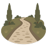

Editor-Kennzeichnung und Menü-Symbole
Entwurfsbogen, 13.08.2026. Das Anzeige-Menü (Auge) kennzeichnet seit dem 12.08. mit „nur Editoren“, was ein gewöhnlicher Besucher nicht sieht. Dieser Bogen zeigt, wo dasselbe Merkmal sonst noch trägt — und wo es nicht trägt, obwohl man es hinsetzen könnte.
Und die Gegenregel: Ein Merkmal ist nur dann eine Auskunft, wenn es auch fehlen kann. Auf einer Oberfläche, die zu 100 % dem Editor gehört (Kreuzungs-Popup, Gebiets-Menü, Editor-Panel), sagt „nur Editoren“ nichts — dort helfen Gruppierung und Symbole, nicht ein Schild an jeder Tür.
1 — Das Merkmal, hausweit
Heute heißt es .map-display-menu__editor-hint und wohnt im Anzeige-Menü. Sobald es an
vier Stellen hängt, ist ein bauteil-eigener Name die falsche Adresse. Vorschlag: eine
Klasse .avesmaps-scope-hint in einem gemeinsamen Blatt, die alte fällt weg (nicht: bleibt
daneben stehen). Zwei Wörter, dieselbe Form:
Prüfen nur Editoren Datenpflege nur Admins
Sprachschlüssel: ui.editorOnly / ui.adminOnly.
display.editorOnly geht darin auf. 💣 Der Text gehört in ein eigenes <span> —
data-i18n setzt textContent und löscht am Elternelement die Kinder mit.
2 — Orts-Infobox: der Hauptfall
Acht Kacheln, vier davon für jeden, vier nur für Editoren — und nichts sagt, welche welche sind. Die zweite Reihe ist zusätzlich die einzige ohne Symbole: nackter Text unter vier Illustrationen.
Heute
Verworfen — farbige Symbole Owner 13.08.
Bearbeiten nur Editoren
✅ Entschieden — monochrome Zeichen
Bearbeiten nur Editoren
Entschieden am 13.08.: monochrom (Owner: „nimm die monochromen icons“). Damit spricht die Kachelleiste dieselbe Sprache wie das Kartenmenün darunter in §4: farbiges Bild für das, was jeden angeht — mageres Zeichen fürs Werkzeug. Der Zweiklang gilt jetzt im ganzen Haus, nicht nur an einer Stelle.
💣 Die monochrome Spalte war zunächst falsch gezeichnet — und hätte die Entscheidung
beinahe gekippt (Owner: „den monochromen seh ich nix, weil die weiß sind“): die Glyphen hingen in
.location-popup__action-icon, und die Klasse trägt die helle Schrift des gefüllten
Knopfes. Auf einem weichen Knopf ist das im hellen Thema Weiß auf Beige. Das gebaute Zeichen hängt
deshalb in einer eigenen Klasse .location-popup__action-glyph mit
color: currentColor — dem einzigen Wert, der auf dem weichen, dem gefüllten und dem
roten Knopf stimmt. ⚠️ Kein Fehler im Programm: dort hängt die alte Klasse nur am gefüllten „+“ und am
roten „✕“, wo ihre Farbe richtig ist.
Die Zeichen sind dieselben wie im Kontextmenü, Zeichen für Zeichen: ━ Weg · ● Ort · ✥ verschieben · ⚙ Eigenschaften · ✎ Geometrie · ✕ löschen. Ein Editor soll nicht zwei Vokabulare für dieselbe Geste lernen, nur weil sie einmal in einem Menü und einmal auf einer Kachel steht.
3 — Dasselbe Band an Weg, Kreuzung, Kraftlinie
Der Weg hat zwei Besucher-Kacheln und drei Editor-Kacheln — identischer Fall, identische Lösung. Die Kreuzung ist der Gegenfall: sie gehört ganz dem Editor, ein Merkmal sagt dort nichts.
Weg — Band wie beim Ort

Bearbeiten nur Editoren
Kreuzung — kein Merkmal, nur Zeichen
Ein Besucher bekommt hier gar keine
Aktionsleiste (crossingActionsMarkup gibt außerhalb des Bearbeiten-Modus ""
zurück). Ein Schild „nur Editoren“ über einer Liste, die sonst nicht existiert, ist eine Auskunft
an niemanden.
4 — Kartenmenü (Rechtsklick): der Zweiklang, den es schon gibt
Nicht offensichtlich, aber im Code eindeutig: die sieben Besucher-Einträge tragen farbige
aventurische Bilder (Feder & Papier, Brief, Lupe, Fernrohr, Schuh, Lineal —
map-context-menu-icons.css), die Editor-Einträge monochrome Zeichen
(map-context-menu.css). Diese Sprache ist gewachsen, nicht beschlossen — aber sie
funktioniert: Farbe = für alle, Zeichen = Werkzeug. Ihr fehlt nur eines: das Merkmal.
✅ Entschieden am 13.08.: „Hier hinzufügen“ bleibt oben — es kommen nur Trennlinie
und Merkmal dazu. Damit ist auch der Haken vom Tisch, den ein Umzug nach unten mitgebracht hätte: das
Untermenü klappt nach rechts auf und ist oben verankert (.map-context-submenu { top: -5px }),
ganz unten wäre es aus dem Bildschirm gewachsen. Der Trenner steht deshalb unter der Gruppe,
nicht darüber.
Heute
✅ Entschieden — oben bleiben, Merkmal + Trenner darunter
Untermenü — die vier fehlenden Zeichen
Diese fünf haben ihre Zeichen bereits — sie
stehen nur nie neben den farbigen, weil das Untermenü aufklappt. Der Zweiklang stimmt hier also
schon. 💣 Zwei Ausreißer gibt es trotzdem: 🖌 und ∿ im Flächenmenü sind
Emoji bzw. Sonderzeichen und rendern je nach Gerät farbig.
bootstrap.js nimmt ihr das hidden erst im Bearbeiten-Modus). Der
Reihenfolge-Streit war also einer über eine Zeile, die genau eine Rolle je zu Gesicht bekommt.
5 — Gebiets- und Flächenmenü: kein Merkmal, aber Ordnung
Elf Einträge, alle für Editoren, ohne jede Gruppierung — Eigenschaften, Geometrie-Rechnungen und Löschen stehen als eine Liste untereinander. Hier hilft kein Schild, hier helfen Trenner.
Heute
Vorschlag — drei Gruppen, dieselben Einträge
🔴 Das Flächenmenü der Landschaften trägt dieselben Zeichen und dieselbe
Reihenfolge — ausdrücklich, damit Editoren nicht zwei Vokabulare für dieselbe Geste lernen
(map-context-menu-icons.css). Wer hier gruppiert, gruppiert dort mit.
6 — Editor-Hülle: dasselbe Merkmal, anderes Wort
In der Kopfzeile von edit/index.php steht ein Eintrag, den Editoren nicht
sehen: das Datenbank-Backup ist Admin-Sache (die Datei trägt Passwort-Hashes). Heute ist er von den
anderen nicht zu unterscheiden — er ist einfach da oder nicht.
Nebenbefund: die beiden Emoji 📖 und 💾
sind Fremdkörper im Haus — icons/buch.webp und ein Truhen-/Siegel-Symbol wären die
aventurischen Vokabeln (§8).
7 — Wo das Merkmal nicht hingehört
| Oberfläche | Mischung? | Vorschlag |
|---|---|---|
| Orts-Infobox / schwebende Box | 4 + 4 | Band + Merkmal + Symbole (§2) |
| Weg-Infobox | 3 + 3 | dasselbe Band (§3) |
| Kraftlinien-Infobox | 2 + 2 | dasselbe Band |
| Kartenmenü (Rechtsklick) | 6 + 1 Gruppe | Trenner + Merkmal (§4) |
| Anzeige-Menü (Auge) | 5 + 2 Gruppen | ✅ seit 12.08. fertig — das Vorbild |
| Bewertungen in der Infobox | Zeilenaktionen | kein Merkmal. Die Moderationsknöpfe stehen in der Bewertungszeile, nicht in einem Menü — ein Schild über dem Abschnitt behauptete, der ganze Abschnitt sei Editorensache. Er ist es nicht. |
| Kreuzungs-Popup | 100 % Editor | kein Merkmal, nur Symbole (§3) |
| Gebiets-/Flächenmenü | 100 % Editor | kein Merkmal, aber Gruppen (§5) |
| Editor-Panel (4 Reiter) | 100 % Editor | kein Merkmal |
| Editor-Hülle Kopfzeile | Editor + 1 Admin | „nur Admins“ (§6) |
| Ansichts-Kachel, Routenplaner, Hinweise | für jeden | nichts zu tun |
8 — Die Symbole: was da ist, was fehlt, was heute gemalt wurde
Die Zeichen der Editor-Kacheln — dieselben wie im Kontextmenü
💣 Nur ↯ und ⇄ sind neu — die übrigen sechs stehen Zeichen für Zeichen so
im Kontextmenü (css/components/map-context-menu.css). Für Kraftlinien und Flussrichtung gibt
es dort keinen Eintrag, also auch kein Vorbild.
Farbige Bilder bleiben, wo sie hingehören — bei dem, was jeden angeht
(Besucher-Aktion)
⚠️ markierung.webp, landweg, Pfad,
dorf und kraftlinien waren im ersten Entwurf für die Editor-Kacheln
vorgesehen und sind mit dem Entscheid vom 13.08. wieder frei. markierung.webp liegt damit
weiterhin unbenutzt im Repo — seit dem 12.07.2026.
✅ Heute vom Owner gemalt und eingeholt — sie ersetzen die beiden alten
Kachel „Literatur“
Kachel „Kartensammlung“
Beide sind mit dem Hausrezept aus dem Quellordner geholt (getrimmt, 120 px, auf
128² transparent zentriert, Qualität 88) und liegen als img/menu/literatur.webp /
img/menu/kartensammlung.webp. Eigener Dateiname statt Überschreiben: die
alten tragen ein handgeschriebenes ?v=2 im Programmtext, das beim Überschreiben mitgezählt
werden müsste — ein neuer Name macht die Zwischenrunde überflüssig. ⚠️ Die beiden alten bleiben liegen
(der Deploy löscht nie), so wie abenteuer, markierung und
stadtkarte schon.
Noch offen — zwei weitere von heute
linkteilen.webp?
federundpapier.webp?
🔧 DU: Sollen die beiden ihre Vorgänger auch ablösen? Sie hängen an „Link teilen“ (Kachel) und „Stelle markieren und teilen“ (Kartenmenü) — beides Besucher-Oberflächen, also unabhängig von dieser Sache.
Fehlt noch
⭐ Der Entscheid für Zeichen hat die Liste kürzer gemacht: „Kreuzung“ braucht keinen Pinsel mehr, sie bekommt ✚ bzw. ✥ aus dem vorhandenen Satz.
Farbiges Bild für das, was jeden angeht — Link teilen, Literatur, Kartensammlung, Änderungen vorschlagen, Bewertung.
Monochromes Zeichen für das Werkzeug — jede Kachel und jeder Menüeintrag, den nur ein Editor sieht.
So ist es im Kartenmenü seit Monaten gewachsen; seit heute gilt es auch für die Kachelleiste. Der Nebengewinn: eine neue Editor-Aktion braucht keine gemalte Illustration mehr, sondern ein Zeichen aus dem vorhandenen Satz — sie kann sofort gebaut werden, statt auf den Pinsel zu warten.
9 — Stand: gebaut am 13.08.2026
Jede Etappe ging als eigener Commit live (AGENTS.md §9). Fünf von sechs sind fertig; Etappe 5 wartet auf eine Entscheidung — die Begründung steht unter der Tabelle.
| # | Etappe | Sichtbar für |
|---|---|---|
| ✅ 1 | Merkmal wird hausweit (.avesmaps-scope-hint, ui.editorOnly/ui.adminOnly) — Anzeige-Menü zieht auf die neue Klasse um | niemanden (gleiches Bild) |
| ✅ 2 | Editor-Band in der Orts-Infobox + Zeichen für die vier Kacheln; dabei die zwei neuen Bilder (Literatur, Kartensammlung) anschließen | Editoren (die zwei Symbole: jeden) |
| ✅ 3 | Dasselbe Band an Weg und Kraftlinie; Zeichen am Kreuzungs-Popup | Editoren |
| ✅ 4 | Kartenmenü: Trenner unter „Hier hinzufügen“ + Merkmal (kein Umzug — Owner 13.08.) | Editoren |
| 🔧 5 | Gebiets- und Flächenmenü gruppieren (beide gemeinsam, nie eins allein) | — offen, siehe unten |
| ✅ 6 | Editor-Hülle: „nur Admins“ + die beiden Emoji ersetzen | Admins |
index.html
— dort wären die drei Gruppen eine halbe Stunde Arbeit. Das Flächenmenü der Landschaften
baut sich zur Ladezeit selbst zusammen: sechs Dateien melden ihre Einträge über
addEntry an, und die Reihenfolge ergibt sich aus der Skript-Reihenfolge in
index.html plus der Regel „alles Zerstörende ans Ende“. Es gibt dort gar keinen
Begriff von Abschnitten.
Einen einzuführen ist machbar — aber dann muss jemand entscheiden, wohin Pinsel, Radiergummi, „Fläche vereinfachen“, „Kopieren …“, „aus Territoriumsgrenze“ und „Höhenpunkt setzen“ gehören. Das ist deine Vokabel, nicht meine. Nur das Gebietsmenü zu gruppieren hätte genau die Divergenz gebaut, vor der das CSS an dieser Stelle ausdrücklich warnt: „Editoren dürfen nicht zwei Vokabulare für dieselbe Geste lernen.“
⚠️ Etappe 2 trug eine Besucher-Änderung huckepack: die zwei neuen Bilder an „Literatur“ und „Kartensammlung“ sieht jeder, nicht nur Editoren.